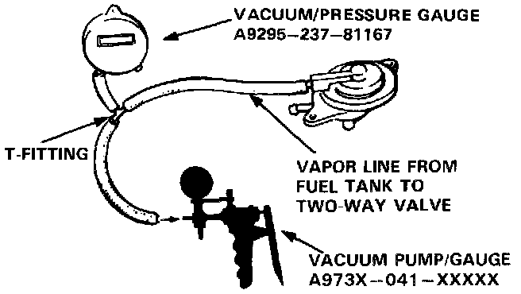
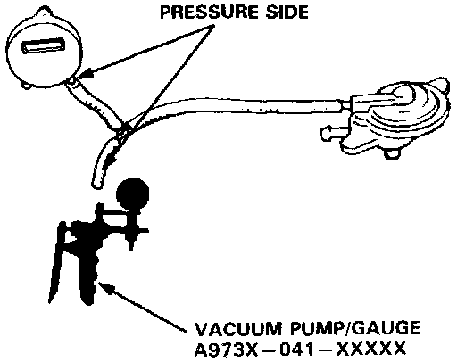

Coupe
Two-Way Valve1. Remove the fuel filler cap.

2 . Remove vapor line from the fuel tank and connect to T-fitting from vacuum gauge and vacuum pump as shown.
3. Slowly apply vacuum while watching the gauge.
Vacuum should stabilize momentarily at 5 to 15 mmHg (0.2 to 0.6 in. Hg).
- If vacuum stabilizes (valve opens) below 5 mmHg (10.2 in. Hg) or above 15 mmHg (0.6 in. Hg), install new valve and re-test.

4. Move vacuum pump hose from vacuum to pressure fitting, and move vacuum gauge hose from vacuum to pressure side as shown.
5. Slowly pressurize the vapor line while watching the gauge.
Pressure should stabilize at 25 to 55 mmHg (1.0 to 2.2 in. Hg).
- If pressure momentarily stabilizes (valve opens) at 25 to 55 mmHg (1.0 to 2.2 in. Hg), the valve is OK.
- If pressure stabilizes below 25 mmHg (1.0 in. Hg) or above 55 mmHg (2.2 in. Hg), install a new valve and retest,